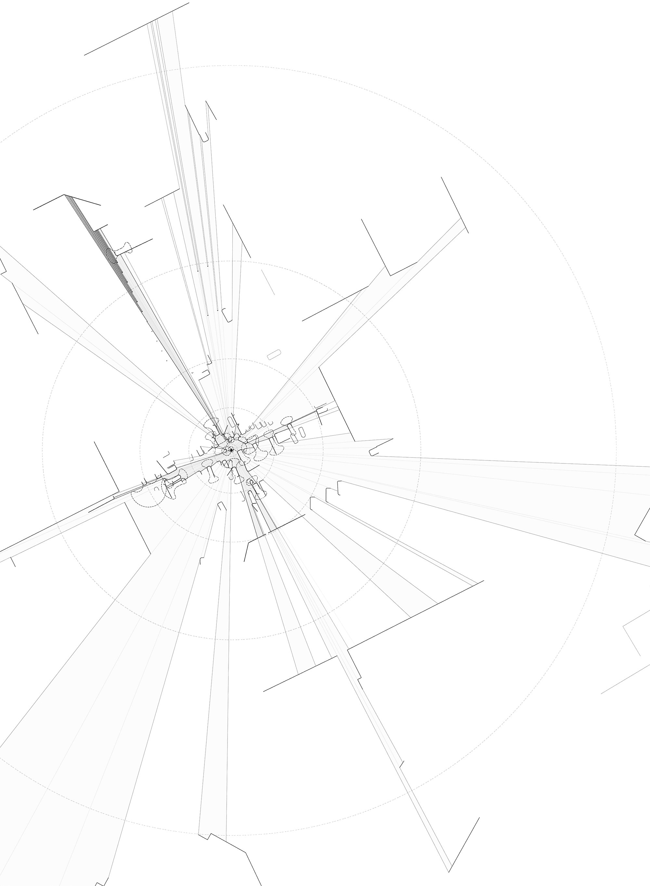
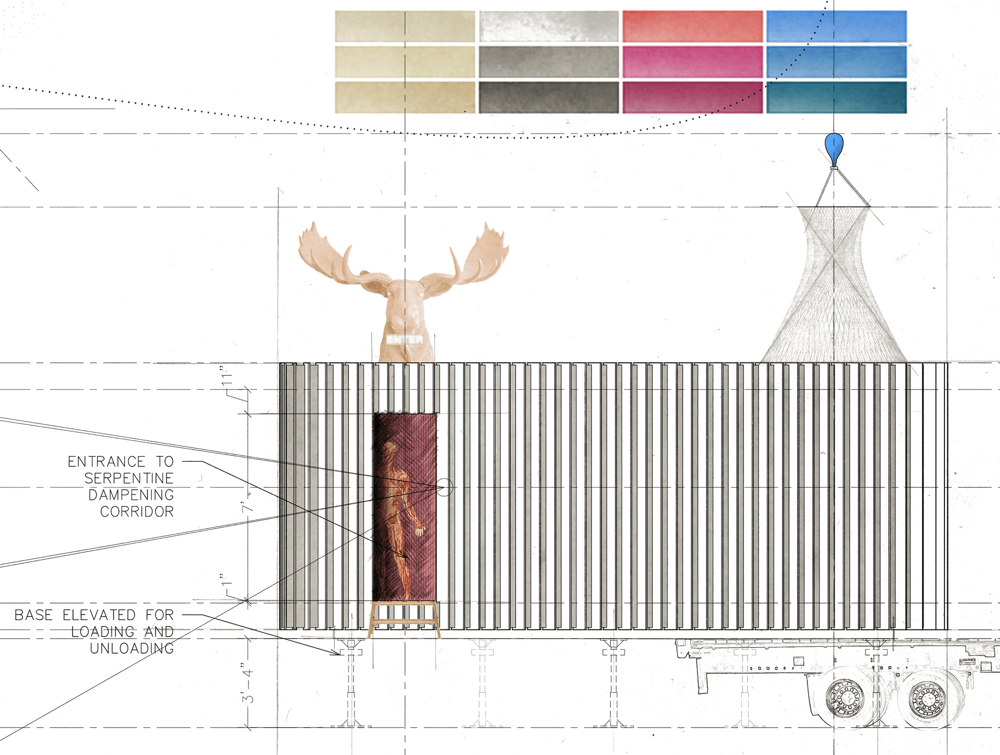
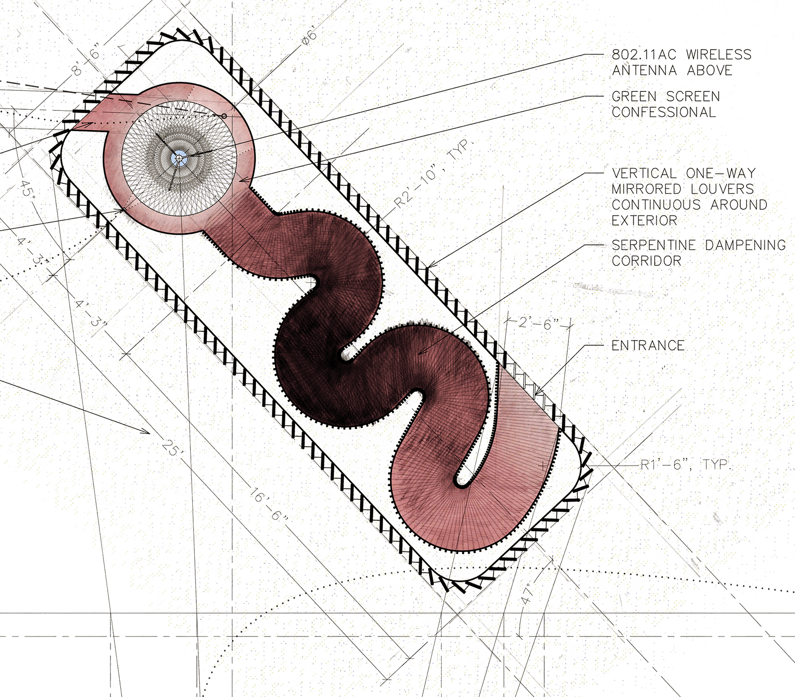
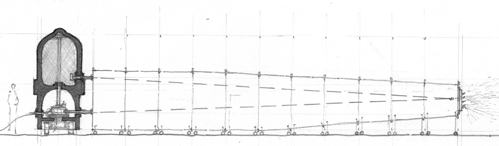
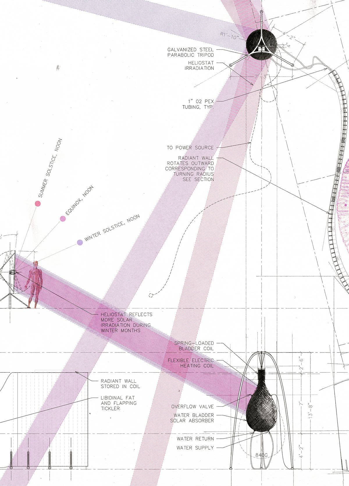
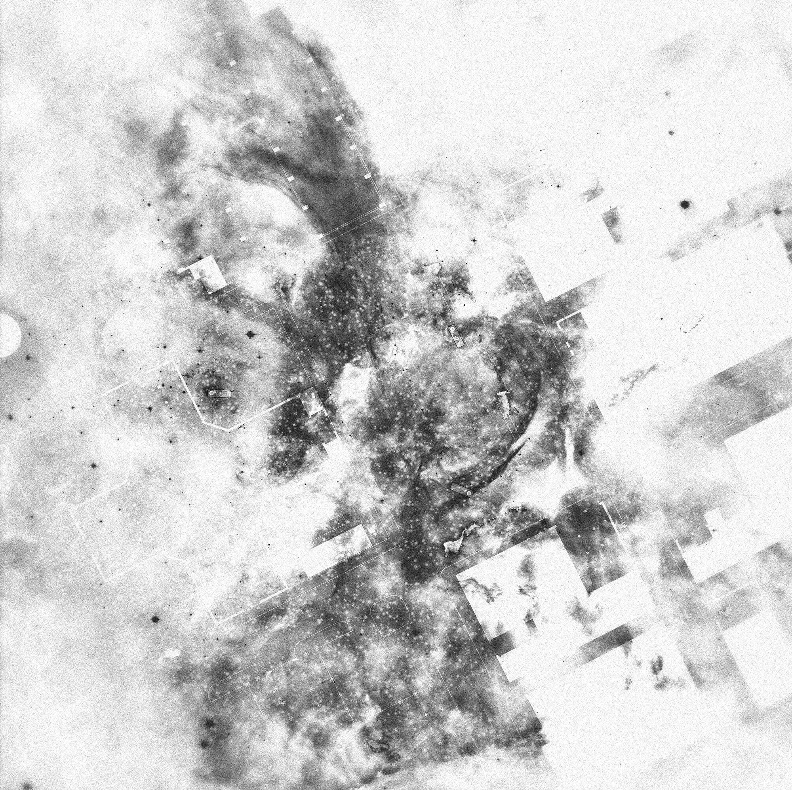

(Click images to zoom. Click circle to return to top.)

Open the so-called body and spread out all its surfaces: not only the skin with each of its folds, wrinkles, scars, with its great velvety planes, and contiguous to that, the scalp and its mane of hair, the tender pubic fur, nipples, nails, hard transparent skin under the heel, the light frills of the eyelids, set with lashes—but open and spread, expose the labia majora, so also the labia minora with their blue network bathed in mucus, dilate the diaphragm of the anal sphincter, longitudinally cut and flatten out the black conduit of the rectum, then the colon, then the caecum, now a ribbon with its surface all striated and polluted with shit; as though your dressmaker's scissors were opening the leg of an old pair of trousers, go on, expose the small intestines' alleged interior, the jejunum, the ileum, the duodenum, or else, at the other end, undo the mouth at its corners, pull out the tongue at its most distant roots and split it, spread out the bats' wings of the palate and its damp basements, open the trachea and make it the skeleton of a boat under construction; armed with scalpels and tweezers, dismantle and lay out the bundles and bodies of the encephalon; and then the whole network of veins and arteries, intact, on an immense mattress, and then the lymphatic network, and the fine bony pieces of the wrist, the ankle, take them apart and put them end to end with all the layers of nerve tissue which surround the aqueous humours and the cavernous body of the penis, and extract the great muscles, the great dorsal nets, spread them out like smooth sleeping dolphins. Work as the sun does when you're sunbathing or taking grass.
And this is not all, far from it: connected onto these lips, a second mouth is necessary, a third, a great number of other mouths, vulvas, nipples. And adjoining the skin of the fingertips, scraped by the nails, perhaps there should be huge silken beaches of skin, taken from the inside of the thighs, the base of the neck, or from the strings of a guitar. And against the palm, all latticed with nerves, and creased like a yellowed leaf set potter's clays, or even hard wooden handles encrusted with jewels, or a steering wheel, or a drifter 's sail are perhaps required . Don't forget to add to the tongue and all the pieces of the vocal apparatus, all the sounds of which they are capable, and moreover, the whole selective network of sounds, that is, the phonological system, for this too belongs to the libidinal 'body', like colours that must be added to retinas, like certain particles to the epidermis, like some particularly favoured smells to the nasal cavities, like preferred words and syntaxes to the mouths which utter them and to the hands which write them. It is not enough, you see, to say, like Bellmer, that the fold in the armpit of the child, dreamily intent, her elbow on the table and chin in her hand, could count as [valoir pour] the folds of her groin, or even as the juncture of the lips of her sex. The question of 'counting as', don't urge us to ask it, far less to resolve it. It is not a part of the body, of what body?—the organic body, organized with survival as its goal against what excites it to death, assured against riot and agitation—not a part which comes to be substituted for another part, like, for example, in the case of this little girl, the fleshiness of the arm for that of the thighs and its faint fold for the vaginal slit; it is not this displacement of parts, recognizable in the organic body of political economy (itself initially assembled from differentiated and appropriated parts, the latter never being without the former), that we first need to consider. Such displacement, whose function is representation, substitution, presupposes a bodily unity, upon which it is inscribed through transgression. There is no need to begin with transgression, we must go immediately to the very limits of cruelty, perform the dissection of polymorphous perversion, spread out the immense membrane of the libidinal 'body' which is quite different to a frame. It is made from the most heterogeneous textures, bone, epithelium, sheets to write on, charged atmospheres, swords, glass cases, peoples, grasses, canvases to paint. All these zones are joined end to end in a band which has no back to it, a Moebius band which interests us not because it is closed, but because it is one-sided, a Moebian skin which, rather than being smooth, is on the contrary (is this topologically possible?) covered with roughness, corners, creases, cavities which when it passes on the 'first' turn will be cavities, but perhaps on the 'second', lumps. But as for what turn the band is on, no-one knows nor wiII know, in the eternal turn. The interminable band with variable geometry (for nothing requires that an excavation remain concave, besides, it is inevitably convex on the 'second' turn, provided it lasts) has not got two sides, but only one, and therefore neither exterior nor interior.
And this is not all, far from it: connected onto these lips, a second mouth is necessary, a third, a great number of other mouths, vulvas, nipples. And adjoining the skin of the fingertips, scraped by the nails, perhaps there should be huge silken beaches of skin, taken from the inside of the thighs, the base of the neck, or from the strings of a guitar. And against the palm, all latticed with nerves, and creased like a yellowed leaf set potter's clays, or even hard wooden handles encrusted with jewels, or a steering wheel, or a drifter 's sail are perhaps required . Don't forget to add to the tongue and all the pieces of the vocal apparatus, all the sounds of which they are capable, and moreover, the whole selective network of sounds, that is, the phonological system, for this too belongs to the libidinal 'body', like colours that must be added to retinas, like certain particles to the epidermis, like some particularly favoured smells to the nasal cavities, like preferred words and syntaxes to the mouths which utter them and to the hands which write them. It is not enough, you see, to say, like Bellmer, that the fold in the armpit of the child, dreamily intent, her elbow on the table and chin in her hand, could count as [valoir pour] the folds of her groin, or even as the juncture of the lips of her sex. The question of 'counting as', don't urge us to ask it, far less to resolve it. It is not a part of the body, of what body?—the organic body, organized with survival as its goal against what excites it to death, assured against riot and agitation—not a part which comes to be substituted for another part, like, for example, in the case of this little girl, the fleshiness of the arm for that of the thighs and its faint fold for the vaginal slit; it is not this displacement of parts, recognizable in the organic body of political economy (itself initially assembled from differentiated and appropriated parts, the latter never being without the former), that we first need to consider. Such displacement, whose function is representation, substitution, presupposes a bodily unity, upon which it is inscribed through transgression. There is no need to begin with transgression, we must go immediately to the very limits of cruelty, perform the dissection of polymorphous perversion, spread out the immense membrane of the libidinal 'body' which is quite different to a frame. It is made from the most heterogeneous textures, bone, epithelium, sheets to write on, charged atmospheres, swords, glass cases, peoples, grasses, canvases to paint. All these zones are joined end to end in a band which has no back to it, a Moebius band which interests us not because it is closed, but because it is one-sided, a Moebian skin which, rather than being smooth, is on the contrary (is this topologically possible?) covered with roughness, corners, creases, cavities which when it passes on the 'first' turn will be cavities, but perhaps on the 'second', lumps. But as for what turn the band is on, no-one knows nor wiII know, in the eternal turn. The interminable band with variable geometry (for nothing requires that an excavation remain concave, besides, it is inevitably convex on the 'second' turn, provided it lasts) has not got two sides, but only one, and therefore neither exterior nor interior.
Libidinal Economy by Jean-François Lyotard

Electracy is analogous to literacy; it is the newfound ability to dynamically shape the world by means of the image.

This study observes Detroit’s Eastern Market in a condition both highly volatile and increasingly electrate, and introduces three interventions with potential fitness.


The Digital Confessional functions as a sort of staged photo-booth wherein one is both removed from all direct exterior context and simultaneously broadcast to the outside.

The booth physically shelters but digitally exposes.

Images taken are transposed onto scenes from the physical Eastern Market, just outside: a signal of authenticity.


The Tickler is a thermal mass heated by staged mini-heliostat arrays placed about nearby rooftops.
Heat is transferred through a flexible radiator, creating enclosures suited for some of the market’s more lingering activities in the winter months.
Heat is transferred through a flexible radiator, creating enclosures suited for some of the market’s more lingering activities in the winter months.

The skin covering the radiator becomes a projection surface for media that is neither flat nor featureless, but rather a rippling tactile image-blanket.

Adam’s Meats Power Supply is an opportunistic provider for parking lot vendors.

Poles roll out and distributes electricity overhead, and bear media broadcasting dishes that launch targeted advertisements, or if the price is right, entertainment.
